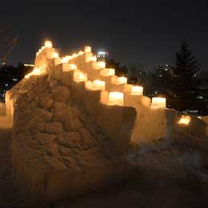
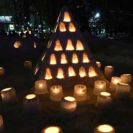
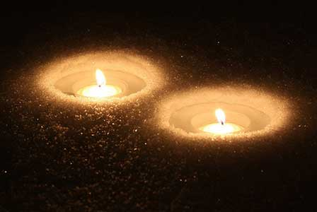

中島公園会場

- 札幌の中心部に位置する「中島公園」。札幌随一の歓楽街すすきのに隣接しながらも、平和でのどかな空気が流れています。
重要文化財に指定された開拓使の建造物「豊平館」を擁し、「日本の都市公園100選」や「日本の歴史公園100選」に選ばれるなど、札幌のみならず北海道を代表する公園の1つとなっています。
ゆきあかりin中島公園
- 冬の札幌にゆらゆら煌めく優しい灯
2020年に第14回を迎えた「ゆきあかりin中島公園」。
自然豊かな憩いの場として市民に愛されている「中島公園」で、雪まつり期間中に開催される人気のイベントです。
雪化粧をした園内は、柔らかなキャンドルのあかりに包まれ、幻想的な世界を楽しめます。来場者が紙コップに願い事を書いて、オリジナルのランタンを作れるコーナー（参加無料）もあります。
2021年は、新型コロナウイルスの感染拡大防止対策として会場展開を見送ることとなりました。
例年開催の模様を振り返りながら、来る2022年、みなさまとお会いできることを楽しみにしています。
キャンドルの幻想的な灯りが彩る
- 
第14回開催／令和2年
あいうえおかきくけこ

第13回開催／平成31年
あいうえおかきくけこ

第12回開催／平成30年
あいうえおかきくけこ
- 
第11回開催／平成29年
あいうえおかきくけこ
- 
第10回開催／平成28年
あいうえおかきくけこ
第9回開催／平成27年